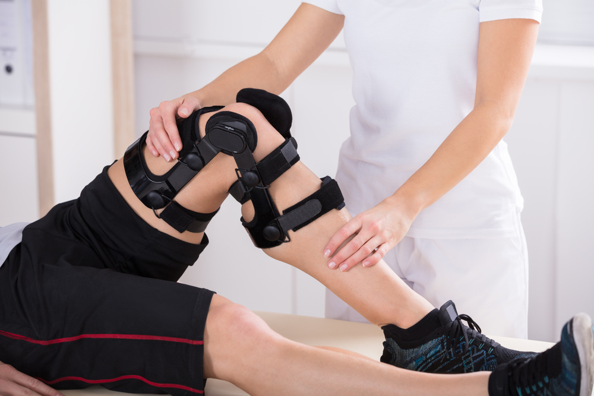

초기 통증 관리
부하를 줄이고 필요에 따라 약물·보조기로 무릎을 보호합니다.
무릎의 앞뒤 움직임과 회전을 조절하는 십자인대가 손상되면
관절이 불안정해지고 통증과 붓기가 생길 수 있습니다.

전방·후방십자인대는 무릎 안에서 정강이뼈가 지나치게 움직이지 않도록 잡아줍니다.
급격한 방향 전환이나 착지, 무릎 뒤쪽 충격으로 인대가 손상되면 관절의 안정성이 떨어집니다.
손상 당시 무릎에서 소리가 나거나 통증과 붓기가 생기며
걷거나 방향을 바꿀 때 무릎이 빠지는 듯할 수 있습니다.
전방·후방 인대의 상태와 동반 손상을 고려하여
보조기, 재활치료와 수술의 필요성을 판단합니다.

부하를 줄이고 필요에 따라 약물·보조기로 무릎을 보호합니다.

움직임과 근력, 균형을 회복하며 일상과 운동 복귀를 준비합니다.

지속되는 불안정성이나 동반 손상은 인대 재건 등 수술을 검토합니다.
걸을 수 있어도 십자인대 손상이 있을 수 있습니다. 무릎이 크게 붓거나 꺾이는 느낌, 불안정성이 있다면 손상 여부를 확인해야 합니다.
전방·후방 인대의 구분, 손상 정도와 동반 손상, 불안정성 및 활동 목표에 따라 달라집니다. 재활 중심 치료와 수술의 필요성을 개별적으로 평가합니다.
통증이 줄어도 관절의 안정성과 근력, 균형 회복이 충분하지 않을 수 있습니다. 필요한 기능을 확인한 후 단계적으로 복귀해야 추가 손상을 줄일 수 있습니다.